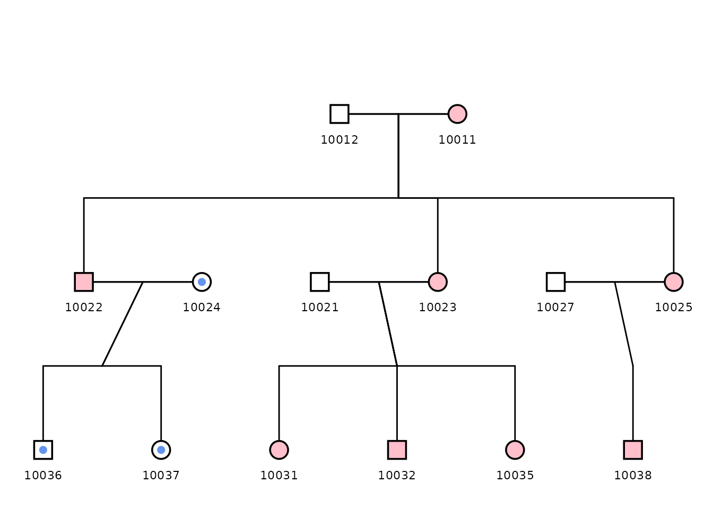
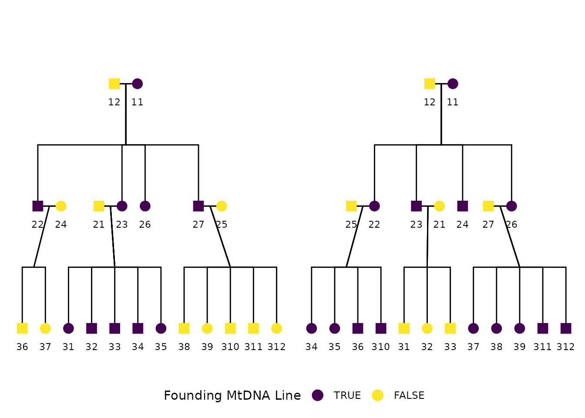
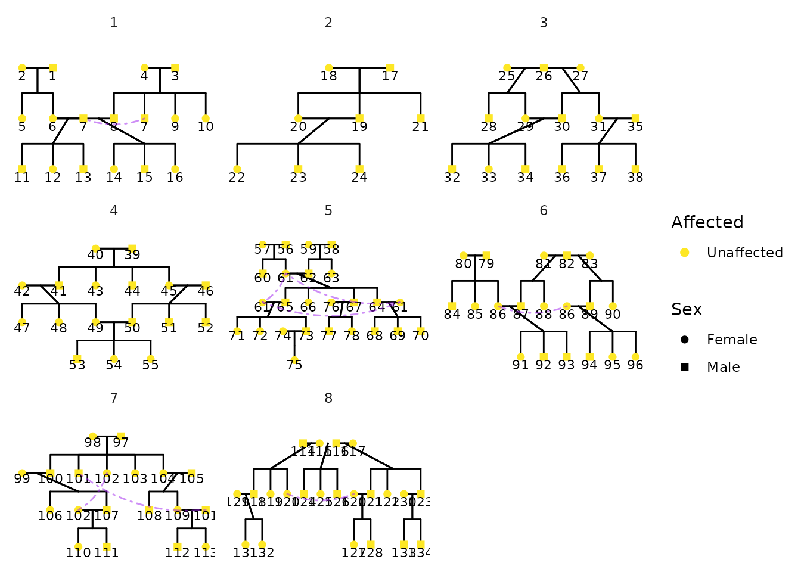

Extended Plotting pedigrees with ggPedigree()
Source:vignettes/articles/v01_plots_extended.Rmd
v01_plots_extended.Rmd
library(ggpedigree) # ggPedigree lives here
library(BGmisc) # helper utilities & example data
library(ggplot2) # ggplot2 for plotting
library(viridis) # viridis for color palettes
library(tidyverse) # for data wranglingConstructing Custom Pedigrees for Publication
Here we demonstrate how to create a custom pedigree using the
ggpedigree package. The data shown here were generated
using the simulatePedigree() function from the {BGmisc}
package, which is the parent package to {ggpedigree}. These simulated
pedigrees were used in a study evaluating statistical power and
estimation bias for a variance decomposition model that includes
mitochondrial DNA (mtDNA) effects.
The simulation generated thousands of extended pedigree structures varying in depth, sibship size, mating structure, and maternal lineage overlap. The example below shows one of the simulated pedigrees and is the version included in the final manuscript:
Detecting mtDNA effects with an Extended Pedigree Model: An Analysis of Statistical Power and Estimation Bias Xuanyu Lyu, S. Alexandra Burt, Michael D. Hunter, Rachel Good, Sarah L. Carroll, S. Mason Garrison Preprint available at: https://doi.org/10.1101/2024.12.19.629449
The structure includes multiple generations, sibling sets, and overlapping parental lineages, and was chosen to illustrate the complexity of the simulated pedigrees used in the power study.
Preparing the data
Each row represents one individual. Variables include
personID, momID, dadID,
sex, and famID. The proband variable is
included to demonstrate status overlays. For plotting, we normalize
identifiers in family 1 to avoid ID collisions across families.
Click to expand pedigree setup
library(tibble)
library(dplyr)
pedigree_df <- tribble(
~personID, ~momID, ~dadID, ~sex, ~famID,
10011, NA, NA, 0, 1,
10012, NA, NA, 1, 1,
10021, NA, NA, 1, 1,
10022, 10011, 10012, 1, 1,
10023, 10011, 10012, 0, 1,
10024, NA, NA, 0, 1,
10025, NA, NA, 0, 1,
10026, 10011, 10012, 0, 1,
10027, 10011, 10012, 1, 1,
10031, 10023, 10021, 0, 1,
10032, 10023, 10021, 1, 1,
10033, 10023, 10021, 1, 1,
10034, 10023, 10021, 1, 1,
10035, 10023, 10021, 0, 1,
10036, 10024, 10022, 1, 1,
10037, 10024, 10022, 0, 1,
10038, 10025, 10027, 1, 1,
10039, 10025, 10027, 0, 1,
10310, 10025, 10027, 1, 1,
10311, 10025, 10027, 1, 1,
10312, 10025, 10027, 0, 1,
10011, NA, NA, 0, 2,
10012, NA, NA, 1, 2,
10021, NA, NA, 0, 2,
10022, 10011, 10012, 0, 2,
10023, 10011, 10012, 1, 2,
10024, 10011, 10012, 1, 2,
10025, NA, NA, 1, 2,
10026, 10011, 10012, 0, 2,
10027, NA, NA, 1, 2,
10031, 10021, 10023, 1, 2,
10032, 10021, 10023, 0, 2,
10033, 10021, 10023, 1, 2,
10034, 10022, 10025, 0, 2,
10035, 10022, 10025, 0, 2,
10036, 10022, 10025, 1, 2,
10310, 10022, 10025, 1, 2,
10037, 10026, 10027, 0, 2,
10038, 10026, 10027, 0, 2,
10039, 10026, 10027, 0, 2,
10311, 10026, 10027, 1, 2,
10312, 10026, 10027, 1, 2
) %>%
mutate(
cleanpersonID = personID - 10000,
personID = ifelse(famID == 1, personID - 10000, personID),
momID = ifelse(famID == 1 & !is.na(momID), momID - 10000, momID),
dadID = ifelse(famID == 1 & !is.na(dadID), dadID - 10000, dadID),
proband = case_when(
personID %in% c(11, 22, 23, 26, 27, 31, 32, 33, 34, 35) ~ TRUE,
personID %in% c(
10011, 10022, 10022, 10023, 10024, 10026,
10034, 10035, 10036, 10310,
10037, 10038, 10039, 10311,
10312
) ~ TRUE,
TRUE ~ FALSE
)
)
df_fig1 <- tribble(
~personID, ~momID, ~dadID, ~sex, ~famID,
10011, NA, NA, 0, 1,
10012, NA, NA, 1, 1,
10021, NA, NA, 1, 1,
10022, 10011, 10012, 1, 1,
10023, 10011, 10012, 0, 1,
10024, NA, NA, 0, 1,
10025, 10011, 10012, 0, 1,
10027, NA, NA, 1, 1,
10031, 10023, 10021, 0, 1,
10032, 10023, 10021, 1, 1,
10035, 10023, 10021, 0, 1,
10036, 10024, 10022, 1, 1,
10037, 10024, 10022, 0, 1,
10038, 10025, 10027, 1, 1
) %>%
mutate(
proband = case_when(
personID %in% c(10011, 10022, 10023, 10025, 10031, 10032, 10035, 10038) ~ TRUE,
TRUE ~ FALSE
),
mtdnaline2 = case_when(
personID %in% c(10024, 10036, 10037) ~ TRUE,
TRUE ~ FALSE
),
)Plotting the pedigree
fig1 <- ggPedigree(
df_fig1,
famID = "famID",
personID = "personID",
status_column = "proband",
debug = TRUE,
config = list(
code_male = 1,
sex_color_include = FALSE,
apply_default_scales = FALSE,
label_method = "geom_text",
label_column = "personID",
point_size = 5,
outline_include = TRUE,
status_code_affected = TRUE,
status_code_unaffected = FALSE,
generation_height = 1,
generation_width = 1,
status_shape_affected = 4,
segment_spouse_color = "black",
segment_sibling_color = "black",
segment_parent_color = "black",
segment_offspring_color = "black",
outline_multiplier = 1.25,
segment_linewidth = .5
)
)
#> Debug mode is ON. Debugging information will be printed.
#> Coordinates calculated. Number of individuals: 14
#> Connections calculated. Number of connections: 14
# fig1
fig1$plot + geom_point(aes(x = x_pos, y = y_pos),
color = "cornflowerblue", size = 2,
data = fig1$data %>% dplyr::filter(mtdnaline2 == TRUE)
) +
scale_shape_manual(
values = c(16, 15, 14),
labels = c("Female", "Male", "Unknown")
) +
guides(shape = "none") + scale_color_manual(
values = c("pink", "white")
) +
# discrete = TRUE,
# labels = c("TRUE", "FALSE"),
# name = ""
# ) +
theme(
strip.text = element_blank(),
legend.position = "none"
)
p2 <- ggPedigree(
pedigree_df,
famID = "famID",
personID = "personID",
status_column = "proband",
# debug = TRUE,
config = list(
code_male = 1,
sex_color_include = FALSE,
apply_default_scales = FALSE,
label_method = "geom_text",
label_include = TRUE,
label_column = "cleanpersonID",
status_code_affected = TRUE,
status_code_unaffected = FALSE,
generation_height = 1,
generation_width = 1,
status_shape_affected = 4,
segment_spouse_color = "black",
segment_sibling_color = "black",
segment_parent_color = "black",
segment_offspring_color = "black"
)
)We finish by adjusting the legend and shape scale for visual clarity:
p2 + scale_shape_manual(
values = c(16, 15, 14),
labels = c("Female", "Male", "Unknown")
) +
guides(shape = "none") + scale_color_viridis(
discrete = TRUE,
labels = c("TRUE", "FALSE"),
name = "Founding MtDNA Line"
) +
facet_wrap(~famID, scales = "free", shrink = TRUE) +
theme(
strip.text = element_blank(),
legend.position = "bottom"
)
More Complex Pedigree Plots with ggPedigree
In this section, we demonstrate how to create a more complex pedigree
plot with multiple families. We use the inbreeding dataset
from the BGmisc package, which contains several
multigenerational pedigrees with consanguinity. Note that in these plots
that some individuals may appear in multiple places within the pedigree.
This is common in large pedigrees, especially when there are overlapping
generations or multiple marriages. Here the colors are set to be the
same for all segments, except for self-loops, which are colored
purple.
library(BGmisc) # helper utilities & example data
data("inbreeding")
df <- inbreeding # multigenerational pedigree with consanguinity
p <- ggPedigree(
df,
famID = "famID",
personID = "ID",
status_column = "proband",
# debug = TRUE,
config = list(
code_male = 0,
sex_color_include = FALSE,
status_code_affected = TRUE,
status_code_unaffected = FALSE,
generation_height = 1,
point_size = 2,
generation_width = 1,
status_shape_affected = 4,
segment_self_color = "purple",
segment_self_linewidth = .5
)
)
p + facet_wrap(~famID, scales = "free") +
guides(colour="none", shape="none")
Advanced Styling Example
The package supports extensive customization of visual aesthetics. The following example is a figure from Hunter et al that used the Potter pedigree data. The figure has been restyled according to Wake Forest University brand identity guidelines to demonstrate ggpedigree’s customization capabilities, including fonts, labeling, and The figure combines two panels: panel (a) highlights unique mitochondrial lines in the Dursley and Evans families, while panel (b) shows the full pedigree with Molly Weasley’s mitochondrial descendants in gold.
library(ggpedigree)
library(BGmisc) # helper utilities & example data
library(tidyverse)
library(showtext)
#> Loading required package: sysfonts
#> Loading required package: showtextdb
library(sysfonts)
library(patchwork) # combining plots
data("potter") # load the potter pedigree data
# Load Google fonts for styling
font_add_google(name = "Cormorant", family = "cormorant")
showtext_auto() # render Google fonts
# Set WFU style guidelines
text_color_wfu <- "#222222"
focal_fill_color_values_wfu <- c(
"#9E7E38", "#000000", "#FDC314", "#CEB888", "#53565A"
)
family_wfu <- "cormorant"
text_size_wfu <- 5.5
# Panel A
m1 <- ggPedigree(potter %>% filter(personID %in% c(1:7, 101:104)),
famID = "famID",
personID = "personID",
config = list(
label_include = TRUE,
label_column = "first_name",
point_size = 8,
focal_fill_personID = 8,
segment_linewidth = 0.5,
label_text_size = 17,
label_text_color = text_color_wfu,
axis_text_color = text_color_wfu,
label_text_family = family_wfu,
focal_fill_include = TRUE,
label_nudge_y = 0.3,
focal_fill_method = "manual",
focal_fill_color_values = focal_fill_color_values_wfu,
focal_fill_force_zero = TRUE,
label_method = "geom_text",
focal_fill_na_value = text_color_wfu,
focal_fill_scale_midpoint = 0.40,
focal_fill_component = "matID",
focal_fill_labels = NULL,
sex_legend_show = FALSE,
sex_color_include = FALSE
)
) + guides(shape = "none") + theme(
plot.title = element_blank(),
plot.title.position = "plot",
text = element_text(family = family_wfu, size = 14)
) + coord_cartesian(ylim = c(3.25, 1), clip = "off")
# Panel B
m2 <- ggPedigree(potter,
famID = "famID",
personID = "personID",
config = list(
label_include = TRUE,
label_column = "first_name",
point_size = 8,
focal_fill_personID = 8, # Molly Weasley
segment_linewidth = 0.5,
label_text_size = 10,
label_text_family = family_wfu,
label_text_color = text_color_wfu,
axis_text_color = text_color_wfu,
label_nudge_y = 0.25,
label_nudge_x = .05,
focal_fill_include = TRUE,
focal_fill_method = "gradient2",
focal_fill_high_color = "#9E7E38",
focal_fill_mid_color = "#9E7E38",
focal_fill_low_color = text_color_wfu[2],
focal_fill_scale_midpoint = 0.85,
focal_fill_component = "mitochondrial",
focal_fill_force_zero = TRUE,
label_method = "ggrepel",
focal_fill_na_value = text_color_wfu,
label_text_angle = -30,
sex_legend_show = FALSE,
sex_color_include = FALSE
)
) + theme(
legend.position = "none",
plot.title = element_blank(),
plot.title.position = "plot",
text = element_text(
family = family_wfu,
size = 14, face = "bold"
)
) + coord_cartesian(ylim = c(4.5, 1), clip = "off")
showtext_auto()
result <- m1 + m2 +
plot_layout(
ncol = 1, heights = c(1.1, 2.5),
guides = "collect", tag_level = "new"
) +
plot_annotation(
tag_levels = list(c("(a)", "(b)")),
theme = theme(plot.margin = margin(0, 0, 0, 0), )
) +
guides(shape = "none") &
theme(
legend.position = "none",
plot.margin = unit(c(0, 0, 0.0, 0), "lines"),
plot.tag = element_text(
family = family_wfu,
size = 4 * text_size_wfu, face = "bold"
)
)
# save
ggsave(
filename = "wfu_potter_pedigree.png",
plot = result,
width = 9.5, height = 6, dpi = 300, units = "in"
)